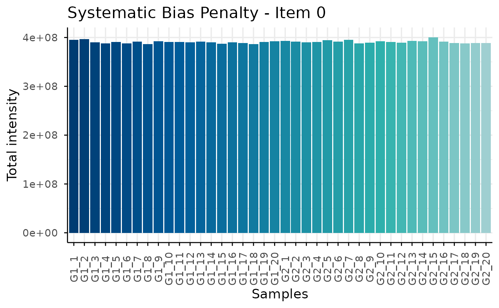
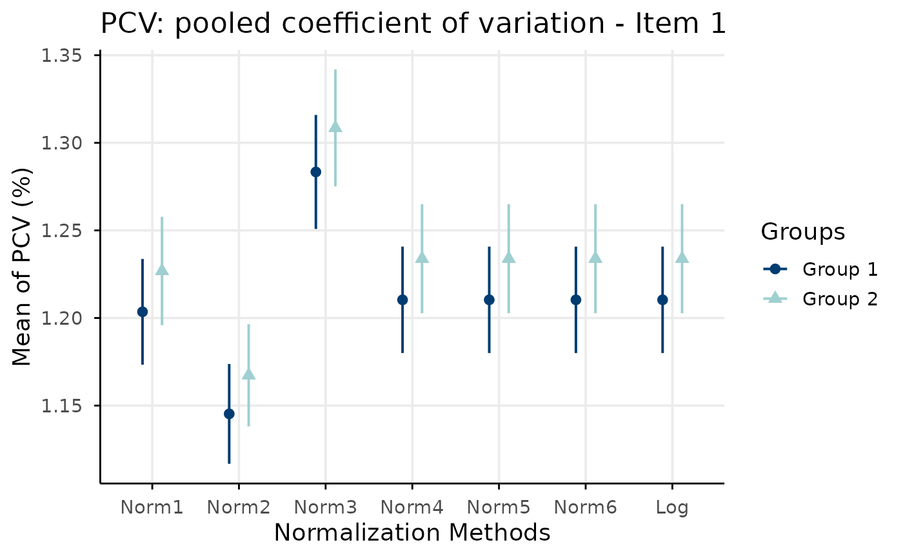
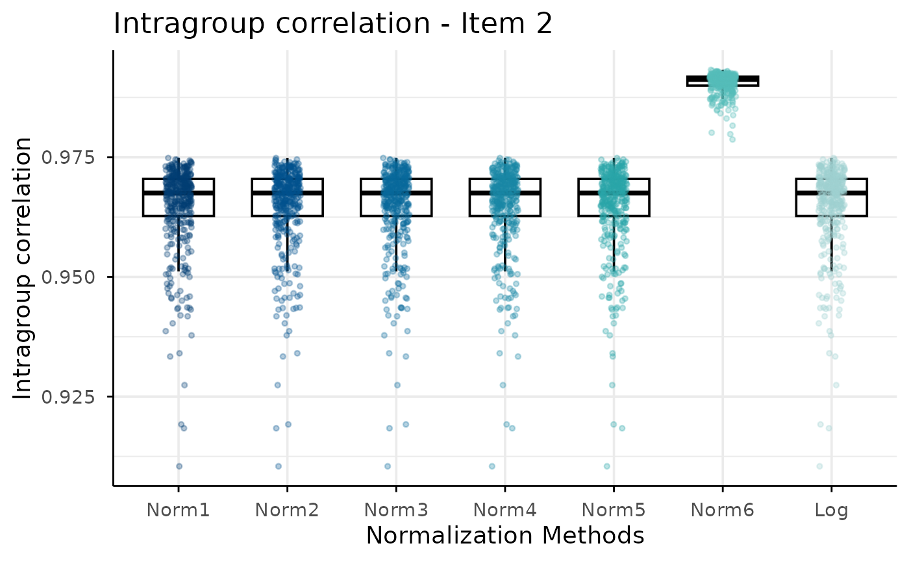
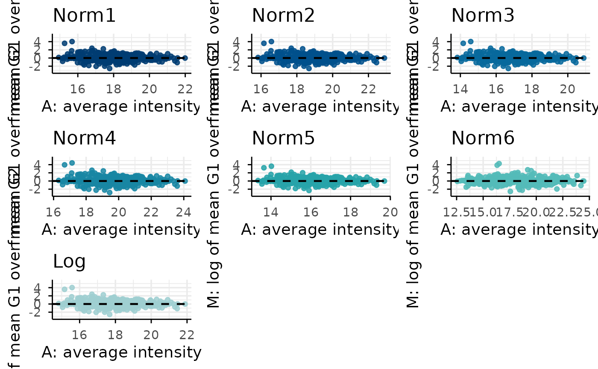
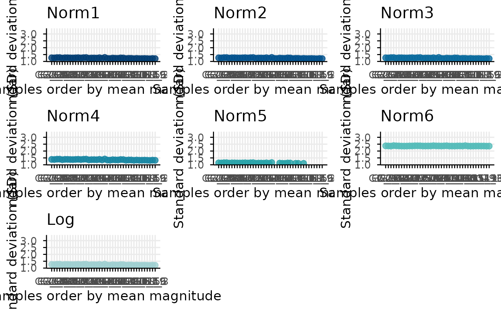
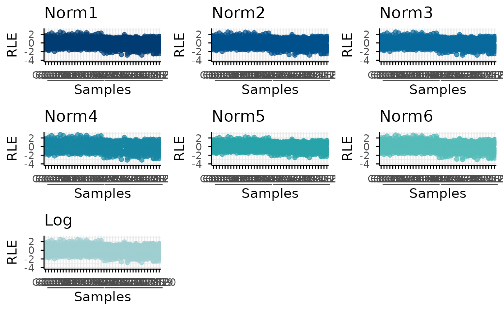
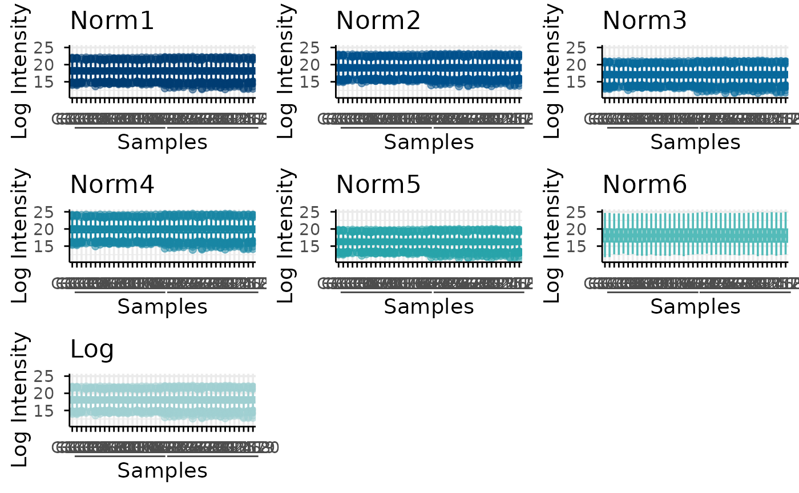

Plot normScore diagnostic items
plotNormScoreDiagnostics.RdGenerates the set of diagnostic plots associated with the individual normScore evaluation items. These plots provide a visual interpretation of the criteria used to assess normalization performance, including raw total intensity, pooled coefficient of variation, within-group correlation, MA plots, mean-SD trends, RLE distributions, and intensity distributions.
Usage
plotNormScoreDiagnostics(
normalizedDataList,
groupData,
rawData,
refGroup = NULL,
altGroup = NULL
)Arguments
- normalizedDataList
A named list of normalized data matrices or data frames. Each element should contain proteins in rows and samples in columns.
- groupData
A data frame containing sample-group annotation. The first column is assumed to contain sample names and the second column group labels.
- rawData
A matrix or data frame containing raw intensity values, with proteins in rows and samples in columns.
- refGroup
Character string indicating the reference group used for the MA-plot diagnostic. If
NULL, it is automatically selected.- altGroup
Character string indicating the alternative group used for the MA-plot diagnostic. If
NULL, it is automatically selected.
Value
A named list of diagnostic plots. Each element corresponds to one
normScore item. If the input contains a single group, the MA-plot element
is returned as NULL.
Details
The function validates and aligns the input data before plotting. If only one group is provided, the MA-plot diagnostic is skipped because it requires a comparison between two groups.
Examples
# Simulate proteomic data
simData <- simulateData(nProteins = 1000)
# Normalyze ysing NormalyzerDE package
normalizedDataList <- list(
Norm1 = simData$logData + 0.1,
Norm2 = simData$logData + 1,
Norm3 = simData$logData - 1,
Norm4 = simData$logData * 1.1,
Norm5 = simData$logData * 0.9,
Norm6 = simData$logData * runif(ncol(simData$logData), 0.8, 1.2)
)
# Compute ranking
plotNormScoreDiagnostics(
normalizedDataList = normalizedDataList,
groupData = simData$metadata,
rawData = simData$rawData,
refGroup = NULL,
altGroup = NULL
)
#> Reference group set to G2.
#> Alternative group set to G1.
#> Log2-transformed raw data were added to
#> 'normalizedDataList' as 'Log'.
#> $item0

#>
#> $item1

#>
#> $item2

#>
#> $item3

#>
#> $item4

#>
#> $item5

#>
#> $item6

#>